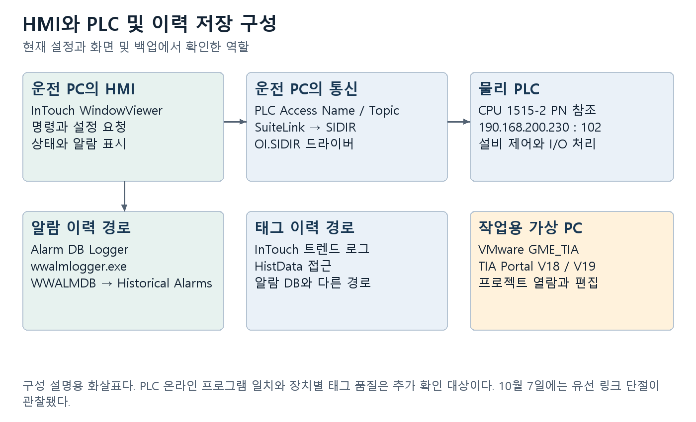
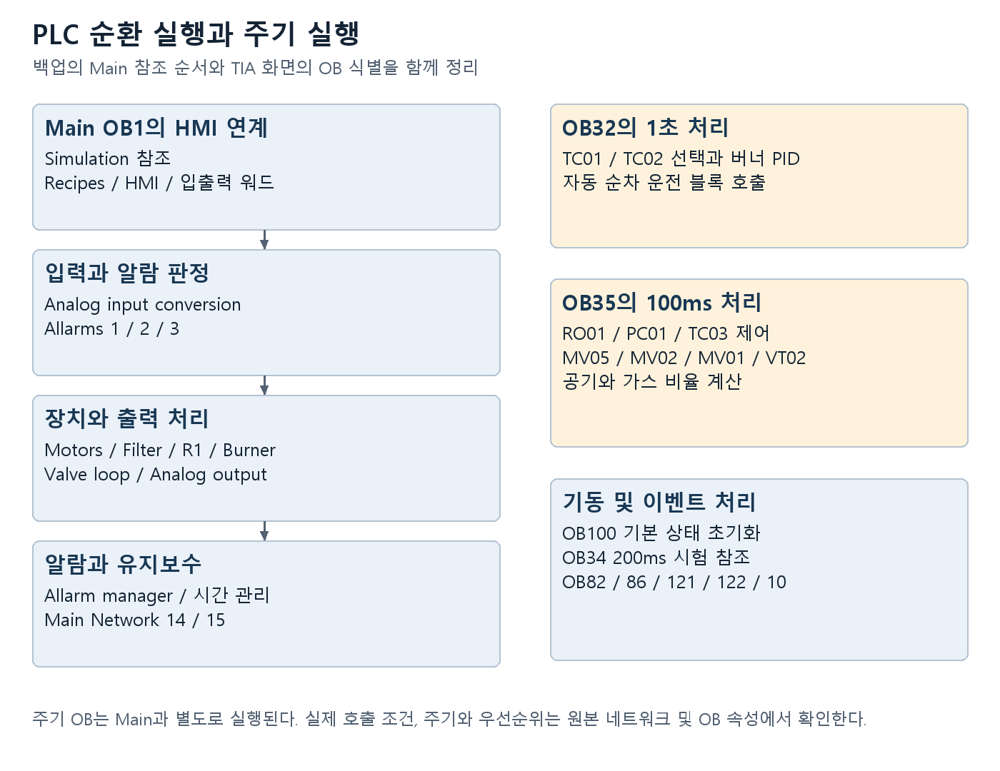
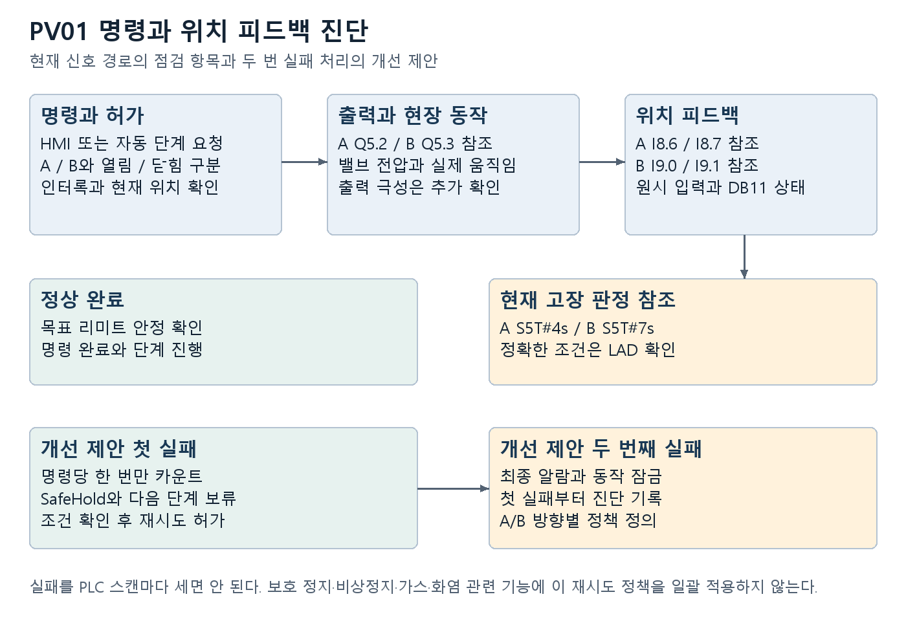
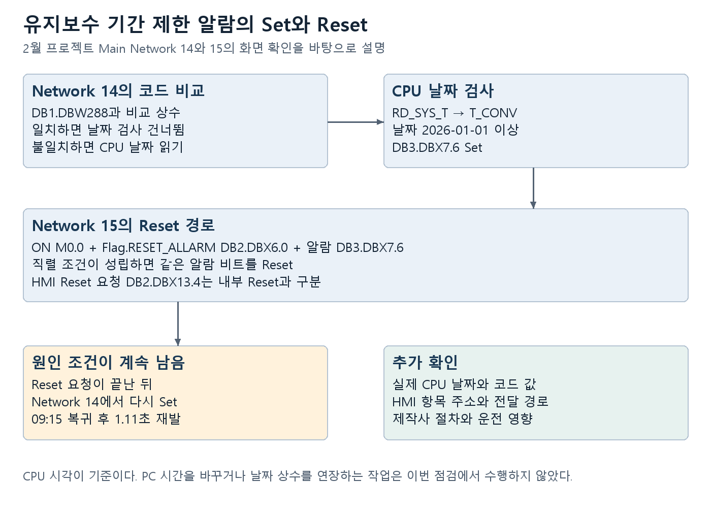
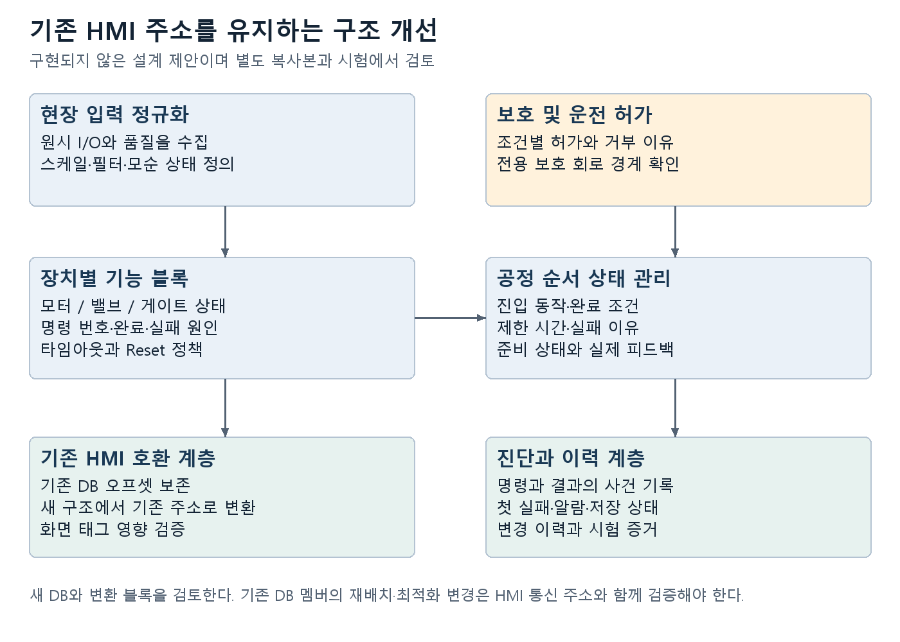

GME HMI와 PLC 운전 및 구조 개선 매뉴얼
문서 버전 1.1 · 작성 기준일 2026년 10월 7일 · 대상 GME Recycling Plant Decoater
이 매뉴얼은 AVEVA InTouch HMI의 화면과 Siemens PLC 프로그램을 연결해서 읽고, 고장 원인을 좁히고, 이후 개선 작업을 계획하기 위한 기술 자료다. 운전 담당자는 화면 값과 알람의 의미를 찾아보고, 정비 담당자는 명령과 피드백의 경로를 추적하며, 프로그램 담당자는 변경할 블록과 시험 범위를 정하는 데 사용한다. 현장 작업 허가와 제작사의 운전 절차는 별도로 적용한다.
현재 시스템은 HMI가 명령과 설정값을 전달하고, PLC가 순환 실행과 주기 실행으로 장치를 제어하며, 별도의 Alarm DB Logger가 알람 이력을 SQL 데이터베이스에 저장하는 구조다. 구조 개선의 첫 작업은 현재 운전 중인 PLC와 보관 프로젝트의 일치 여부를 확인하고, HMI의 주소와 PLC 변수의 대응을 고정하는 것이다. 그 뒤 PV-01의 피드백 처리, 알람 재발 원인, 자동 순차 운전의 단계 관리부터 개선하면 변경 범위를 제한하면서 효과를 확인하기 쉽다.
이 문서에 적힌 화면 값은 관찰 시점의 값이다. 온도 한계, 시간, 속도, PID 계수에 대한 권장 운전값을 뜻하지 않는다. 확인 자료의 종류와 관찰 시점은 1장과 22장에 표시했다. 프로그램 다운로드, 강제 출력, PLC 값 쓰기, 시간 변경, 유지보수 코드 입력은 이번 문서 작성 과정에서 수행하지 않았다.
1 문서 사용법과 확인 자료
1.1 확인 수준
본문의 근거 표시는 다음처럼 읽는다. 각 항목의 근거 종류를 구분하면 백업의 설명을 현재 PLC 상태로 오해하지 않을 수 있다.
| 표시 | 의미 | 사용할 수 있는 판단 |
|---|---|---|
| 화면 확인 | 10월 6일 또는 7일에 HMI나 TIA 화면을 직접 읽음 | 그 화면에 표시된 값과 보이는 로직 |
| 설정 확인 | 현재 PC의 HMI 설정 파일이나 통신 설정을 읽음 | 구성된 태그 주소와 접속 대상 |
| 백업 분석 | 6월 프로젝트의 검색 색인을 분석함 | 블록 구성과 참조 변수 및 코드 토큰 |
| DB 확인 | 로컬 WWALMDB에 읽기 전용 조회를 수행함 | 실제로 저장된 알람 상태 전이 |
| 개선 제안 | 기존 내용을 바탕으로 설계안을 제시함 | 구현 검토와 시험 항목 |
| 추가 확인 | 실기 값이나 접점 연결 등이 아직 확정되지 않음 | 이후 점검에서 수집해야 할 정보 |
검색 색인의 LAD/FBD 토큰은 접점의 직렬·병렬 연결과 정상 열림·정상 닫힘 극성을 완전히 보존하지 않는다. 토큰에 off가 있거나 블록 이름에 deleted가 있어도 네트워크 전체가 비활성이라고 단정하지 않는다. 이 경우 TIA 화면의 접점 연결, 교차 참조, 실행 상태를 확인한다. 재구성한 문자열은 다운로드 가능한 실행 소스가 아니다.
1.2 서로 다른 프로젝트를 구분하는 법
| 구분 | 식별 정보 | 확인 범위 |
|---|---|---|
| 현재 HMI | GianniMoriEngineering_2025_rev1 | 실행 경로와 태그 연결 설정 |
| 주 분석 백업 | GME_20250506.zap18 | 내부 GME_20250605.ap18, 메타데이터 18.0.1.0 |
| VMware에서 열린 프로젝트 | GME2025-02-12 | CPU 1515-2 PN, Main OB1의 Network 14와 15 직접 확인 |
| 현재 물리 PLC | 통신 대상 190.168.200.230 | TCP 연결 확인, 전체 온라인 프로그램 비교 미완료 |
파일 이름의 날짜가 내부 프로젝트 날짜와 같지 않을 수 있다. GME_20250506.zap18의 내부 프로젝트 이름은 GME_20250605.ap18이다. 2월 프로젝트와 6월 백업에서 유지보수 제한 로직은 같은 조건이 확인됐지만, 이것만으로 다른 블록도 동일하다고 판단하지 않는다.
1.3 처음 읽을 순서
운전 담당자는 2장, 3장, 9장, 10장을 먼저 읽는다. PV-01 문제를 점검하는 담당자는 5장의 주소 구분을 읽은 뒤 8장으로 이동한다. 프로그램 개선 담당자는 4장, 6장, 7장, 15장부터 20장까지 읽고 부록의 블록·네트워크 목록을 함께 사용한다. 유지보수 기간 알람은 11장에 실제 로직과 재발 사례를 설명했다.
2 시스템 구성과 역할

2.1 HMI와 PLC와 작업용 가상 PC
InTouch WindowViewer는 운전자의 명령을 받아 PLC 데이터로 전달하고, PLC에서 돌아오는 상태·센서 값·알람을 화면에 표시한다. 명령 버튼을 누르는 것은 화면 조작이면서 PLC 값을 변경하는 작업일 수 있다. 화면을 보는 것과 설정값을 입력하는 것을 구분한다.
PLC는 내부 프로그램을 반복 실행하면서 현장 입력, 모드, 인터록, 설정값을 판단해 출력을 만든다. HMI의 시작 버튼이 켜져 있어도 실제 모터 RUN 피드백이 없으면 운전 완료로 판단하면 안 된다. 출력 명령과 피드백을 함께 확인해야 한다.
VMware의 GME_TIA는 TIA Portal을 실행하는 작업용 가상 PC다. TIA Portal V18과 V19 아이콘이 관찰됐다. HMI는 원래 Windows PC에서 실행되고 PLC 통신도 원래 PC의 드라이버가 담당한다. VMware가 실제 설비를 주기적으로 제어하는 구조로 확인된 것은 아니다. 다만 TIA의 온라인 값 변경, Force, 다운로드, CPU STOP/RUN 명령은 실제 PLC에 영향을 줄 수 있다.
2.2 현재 확인한 구성
| 구성 요소 | 이름 또는 경로 | 역할 |
|---|---|---|
| 운전 화면 | InTouch view.exe | HMI 실행 |
| HMI 응용프로그램 | C:\Users\Public\Wonderware\InTouch Applications\GianniMoriEngineering_2025_rev1 | 화면·태그·스크립트 구성 |
| PLC 통신 | SIDIRECT 프로세스, OI.SIDIR 설정 | Siemens PLC 통신 |
| PLC 대상 | 190.168.200.230, TCP 102 | 현재 접속 대상 |
| 알람 저장 | wwalmlogger.exe | 알람 상태 전이 저장 |
| 알람 DB | localhost의 WWALMDB | Historical Alarms 조회 원천 |
| 태그 이력 접근 | histdata.exe | 태그의 역사 데이터 접근 |
| 엔지니어링 | C:\VM\GME_TIA\GME_TIA.vmx | TIA 실행 환경 |
PLC 프로젝트에는 CPU 1515-2 PN과 제품 번호 6ES7 515-2AN03-0AB0 참조가 확인된다. 153IM155_JB1, 182IM155_JB2 분산 I/O 장치명도 백업에 있다. 실제 하드웨어 주문번호·펌웨어와 장치별 IP는 온라인 장치 정보와 전기 도면으로 확정한다. 프로젝트에 문자열이 존재한다는 사실과 실제 장착된 모듈의 일치는 별도 항목이다.
2.3 연결 상태를 판단하는 기준
앞선 점검에서 원래 PC의 SIDIRECT와 PLC 주소 사이에 TCP 102 연결이 Established로 확인됐으며 HMI에서도 녹색 PLC RUN 표시가 관찰됐다. 그러나 10월 7일 09:46부터 09:48까지 재점검한 시점에는 유선 Ethernet 3이 Disconnected, 링크 속도는 0 bps, 주소는 169.254.121.54였다. PLC 대상 190.168.200.230의 TCP 연결은 없었고 Ping 3회는 모두 시간 초과였다. SIDIR 서비스와 SIDIRECT 프로세스, HMI는 실행 중이었다.
SQL 알람 이력에는 10월 7일 09:40:01.173 UTC에 StatusPLC / UNACK_ALM / PLC comunication FAULT, 09:41:09.507 UTC에 ACK_ALM이 저장됐다. 09:47 HMI 화면 오른쪽 아래에는 노란색 PLC N.C.가 표시됐다. 현재 확보한 증거는 PC 유선 연결의 물리 링크가 끊긴 상태를 가리킨다. 랜선, 스위치 전원, 양쪽 포트의 링크 LED 확인이 우선이다. 어느 케이블이나 포트가 원인인지는 현장 확인이 필요하다. 이 점검 중 네트워크 주소나 PLC 설정은 변경하지 않았다.
통신이 끊긴 HMI에는 마지막 수신값이나 화면 내부 값이 남을 수 있다. Production process running, Burner started, 전류·온도 표시를 현재 설비 상태로 판단하지 않는다. 통신 복구 후 태그 품질과 값 갱신을 다시 확인한다. TCP 연결이 있더라도 모든 태그 품질·장치 상태·프로그램 일치를 보증하지는 않는다.
점검할 때는 드라이버 접속 상태, 태그 품질, PLC RUN 표시, 진단 버퍼, 실제 변화하는 피드백 값을 함께 기록한다. VMware의 TIA가 오프라인이어도 HMI 드라이버는 PLC와 연결될 수 있다. 반대로 TIA가 온라인이어도 HMI의 특정 태그나 알람 저장 경로는 실패할 수 있다.
3 HMI 화면 읽기와 운전 확인
3.1 상단 메뉴와 주요 화면
| 메뉴 | 확인할 내용 | 기록할 항목 |
|---|---|---|
| MENU | 화면 이동과 시스템 기능 | 현재 화면 및 사용자 |
| SYNOPTIC | Decoater의 장치 상태와 공정 값 | 명령값·실제 값·RUN·현재 단계 |
| RECIPES | 레시피 화면 | 선택 레시피와 실제 적용 값의 일치 |
| CONFIGURATION | Parameters, Parameters 2, Burner Settings | 현재 설정과 수정 전후 값 |
| STATUS | 장치·시스템 상태 화면 | 현장 상태와 화면 상태의 대응 |
| ALARMS | Current Alarms, Historical Alarms | 발생·ACK·복귀 시각과 태그 |
현재 HMI의 화면 파일 메타데이터에는 ALARM, ALARM_HIST, ALARM_RECENT, CONFIG1, CONFIG2, CONFIG3 및 장치·트렌드 관련 화면이 있다. 전체 목록은 HMI 화면 목록에 수록했다. 화면 이름이 존재한다는 사실만으로 실제 메뉴에 노출되거나 버튼이 활성화된다고 판단하지 않는다.
3.2 SYNOPTIC 화면의 표시를 읽는 순서
먼저 화면 상단의 SEQUENCE STATUS를 읽는다. Production process running 표시는 생산 순서 상태를 뜻하는 화면 문구이며 모든 모터·버너·센서가 정상이라는 종합 판정으로 사용하지 않는다. 이후 BC01, RD01, 팬·밸브 상태와 현재 알람을 함께 본다.
다음으로 온도·압력·산소·유량의 설정값과 실제 값을 구분한다. 같은 단위의 값이 두 줄로 표시되거나 색상이 다른 경우 화면 객체의 태그 정의를 확인한다. 색상만으로 설정값과 실제 값을 일괄 분류하지 않는다. 예를 들어 온도 화면에는 실제 TC01/TC02와 PID 기준 온도가 따로 나타난다.
마지막으로 장치 RUN 피드백, 전류, 속도 명령, 밸브 위치, 리미트 스위치와 알람을 같이 읽는다. 명령은 있으나 전류가 0이고 RUN이 없으면 허가 조건·인버터·현장 회로를 추적한다. RUN과 전류는 있어도 공정 값이 변하지 않으면 센서 품질, 기계 동작, 시뮬레이션 경로를 확인한다.
3.3 10월 7일 관찰 사례
09:47 화면에는 Production process running, AB-01 Status: Burner started, Burner Status: Burner ready가 남아 있었지만 동시에 PLC N.C.가 표시됐다. 같은 화면의 TC01/TC02는 152/164 °C, TC03은 57 °C로 표시됐다. 이는 통신 장애 중의 표시값으로, 현장의 현재 온도나 실제 운전 상태를 확정하는 데 사용할 수 없다. 센서 선택, 설치 위치, 태그 품질과 값 갱신, 실제 현장 상태를 함께 확인해야 한다.
같은 화면의 최근 알람에는 Stoichiometry out of range가 표시됐다. 이는 공기·가스 비율 계산과 관련된 점검 항목이다. 현재 표시만으로 가스 유량계 또는 버너의 고장을 확정하지 않는다. 12장의 입력 유효성·단위·비율 처리 순서로 점검한다. 문서 작성 중 운전 설정을 변경하지 않았다.
3.4 Parameters 2에서 확인한 설정
아래 값은 10월 6일 화면에서 읽은 값이다. 비교와 변경 이력 작성을 위한 기준 자료이며 운전 권장치가 아니다.
| 화면 항목 | 관찰값 | 단위 |
|---|---|---|
| Time work siren on during incoming of alarm | 20.0 | s |
| Time opening PV-01 A gate | 4.0 | s |
| Time opening PV-01 B gate | 4.0 | s |
| Time opening PV-02 A gate | 2.0 | s |
| Time opening PV-02 B gate | 2.0 | s |
| LD01-V Lime vibrator Work / Pause | 3.0 / 300.0 | s |
| EV-03 Drum lubrification Work / Pause | 5.0 / 600.0 | s |
| Time opening PV-04 dust discharge valve | 60.0 | s |
| MAX TC-01 afterburner temperature | 1000 | °C |
| Min TC-03 decoating temperature | 300 | °C |
| MAX TC-03 decoating temperature | 750 | °C |
| MAX TC-04 TC-05 temperature | 32000 | °C |
| TC-09 temperature for cold air opening | 180 | °C |
| Extremely high TC-09 temperature | 200 | °C |
| Filters cleaning start pressure | 1.0 | mb |
| Filters valve Work / Pause | 0.1 / 6.0 | s |
| Minimal negative pressure PC-01 | -1.0 | mb |
| Max oxygen for scraps loading RO-01 | 10 | % |
| Max decoater inlet pressure PSH-02 | 5.0 | mb |
| PID control FN02 GAIN / TI | 0.0 / 0.0 | 무차원 / s |
| Maintenance code 00 / 01 / 02 | 1 / 1 / 1 | 정수 표시 |
32000 °C와 0.0 표시는 타당성을 확인해야 할 항목이다. 입력 범위, 데이터형, 스케일 변환, 실제 사용하는 네트워크, 초기값과 온라인 값의 차이를 먼저 확인한다. 이 값들을 임의의 권장값으로 바로 변경하지 않는다. 해당 항목은 20장의 검증 대장에도 포함했다.
3.5 읽기 점검 절차
- 현재 사용자, 화면 이름, 관찰 시각을 기록한다.
- PLC RUN과 통신 상태를 확인한다.
- 선택 모드와 순서 상태를 기록한다.
- 명령값·피드백·실제 센서 값을 장치별로 기록한다.
- Current Alarms의 현재 상태와 Historical Alarms의 전이 순서를 비교한다.
- 판단 근거가 모자라면 태그 주소와 PLC 네트워크를 조회한다.
시작·정지, Reset, ACK, Maintenance, Enable, 레시피 적용, 카운터 Reset은 읽기 작업에 포함되지 않는다. 정비 담당자는 화면 이동 중 이 버튼의 의미를 먼저 확인한다. ACK를 누르면 이력 상태가 변하며, Reset은 PLC 조건에 영향을 줄 수 있다.
4 PLC 실행 구조와 블록 지도

4.1 Main OB1의 구성
6월 백업의 Main에는 15개 네트워크 문서가 확인된다. 제목이 없는 네트워크도 포함된 수치다. Network 14와 15의 유지보수 로직은 2월 프로젝트의 TIA 화면에서도 직접 확인됐다. 다른 네트워크의 블록 번호·조건은 동일성 비교가 필요하다.
| 배치 구간 | 참조 블록 또는 데이터 | 역할 |
|---|---|---|
| 시뮬레이션 | Simulation 및 Simulation(1) | 시험 경로 선택 참조 |
| HMI 및 레시피 | Recipes handler, HMI, HMI output, HMI inputs | 명령·표시·레시피 연계 |
| 워드 입출력 | Word_inputs, Word_outputs | 비트 묶음과 워드 이동 |
| 입력 변환과 알람 | Analog input conversion, Allarms 1/2/3 | 공학값 변환과 알람 판정 |
| 장치 운전 | Motors 1, Filter, R1 scraps gate 2, Burner control | 장치별 운전 로직 |
| 상태와 시간 | Motor/alarm client, Time work motor | 상태·알람 연계와 운전 시간 |
| 출력 처리 | Valve control loop, Analog output conversion | 방향 출력과 아날로그 출력 |
| 알람 통합 | Allarm manager | 새 알람·사이렌·리셋 관리 |
| 유지보수 | 시계 및 코드 관련 네트워크 | 날짜 제한과 알람 Reset |
이 배치는 Main 안의 참조 순서다. 접점에 따라 호출 여부가 달라질 수 있고 주기 OB는 Main과 별도로 실행된다. 한 스캔에서 여러 블록이 같은 비트를 쓰는 경우 마지막 쓰기와 인터럽트 실행 시점까지 추적해야 한다.
4.2 주기 실행과 기동 및 오류 처리
| 블록 | 화면 또는 백업에서 확인한 번호 | 주기 또는 기능 |
|---|---|---|
| Main | OB1 | 순환 실행 |
| CYC_INT2 Ogni 1s | OB32 화면 확인 | 1초 이름, 버너 PID·자동 순서 참조 |
| CYC_INT4 Ogni 200ms | OB34 화면 확인 | 200ms 이름, 시험 추세 참조 |
| CYC_INT5 Ogni 100ms | OB35 화면 확인 | 100ms 이름, 산소·압력·온도 제어 |
| Startup only | OB100 화면 확인 | 기동 플래그와 기본 모드 초기화 |
| I/O_FLT1 | OB82 화면 확인 | 진단 인터럽트 관련 블록 |
| RACK_FLT | OB86 화면 확인 | 스테이션·랙 오류 관련 블록 |
| PROG_ERR | OB121 화면 확인 | 프로그래밍 오류 관련 블록 |
| MOD_ERR | OB122 화면 확인 | I/O 접근 오류 관련 블록 |
| TOD_INT0 | OB10 화면 확인 | 시간 관련 이벤트 블록 |
실제 주기는 OB 속성에서 확인한다. 제목만으로 설정 주기를 확정하지 않는다. 백업에는 100ms PID 호출의 Cycle=T#100ms와 버너 PID의 Cycle=T#1s가 있다. 반면 Auto start motors의 주석에는 1ms가 적혀 있지만 호출은 1초 블록에 있다. 주석과 실제 호출 주기의 불일치는 개선 대상이다.
4.3 공유 데이터의 역할
Inputs는 현장 피드백을, Flag는 명령과 모드·Reset 플래그를, Data는 설정과 공정 값을, Allarm은 알람 비트를 담는 구조로 분석된다. HMI_DB와 Motors 계열은 화면 상태와 명령을 연결하고, Workdata는 순서 단계와 계산 중간값을 담는다. Stechio와 Data_PID 및 PID 인스턴스는 제어 계산과 상태를 관리한다.
기존 HMI는 DB 번호와 오프셋을 직접 참조하므로 DB 멤버 추가·삭제·재배치가 화면 태그를 깨뜨릴 수 있다. 구조 개선 시 기존 주소를 유지하는 호환 계층을 두고 새 장치 구조는 별도 데이터로 구성하는 방법을 우선 검토한다. DB 최적화 접근 방식 변경도 HMI 연결 방식과 함께 검토한다.
4.4 장치 하나를 끝까지 추적하는 방법
BC01을 예로 들면 HMI의 명령 태그, Flag의 운전 요청, Auto start motors의 기동 단계, Motors 1의 허가·고장 조건, Start BC01 출력, 현장 RUN 피드백, HMI의 상태 표시 순으로 읽는다. 어느 지점에서 원하는 값이 끊기는지 확인하면 화면 문제·PLC 허가 문제·현장 회로 문제를 나눌 수 있다.
교차 참조에서는 읽는 곳뿐 아니라 쓰는 곳을 모두 확인한다. 자동 블록, 수동 블록, 초기화 블록, Reset 블록이 같은 명령 또는 알람 비트를 쓰는 경우 하나의 네트워크만 수정하면 효과가 다시 덮일 수 있다.
5 HMI 태그와 PLC 주소의 대응
5.1 통신 경로
현재 dde.cfg의 PLC Access Name은 PLC, Application Name은 SIDIR, Topic은 PLC이며 SuiteLink 설정값은 1이다. OI.SIDIR 설정에는 190.168.200.230 대상의 Legacy Rack 0 Slot 1과 Object Rack 0 Slot 0 노드가 함께 존재한다. 어느 노드를 PLC Topic이 사용하는지는 장치 그룹의 대응까지 확인해야 한다. 무조건 하나의 Rack/Slot을 새 연결에 적용하지 않는다.
설정 파일에는 전역 UpdateInterval 1000과 기존 조사에서 확인한 장치 그룹 555ms 항목이 있다. 실제 태그 갱신 주기를 하나의 값으로 단정하지 않는다. 100ms PLC 동작을 HMI의 느린 갱신으로만 보면 센서 흔들림과 순간적인 단계 전이를 놓칠 수 있다.
5.2 확인한 주요 태그
| HMI 태그 | 설정된 주소 | 용도 해석 |
|---|---|---|
| Allarmi_63 | DB3,X7.6 | 유지보수 기간 제한 알람 |
| AbilitaMaintenance | DB2,X7.5 | 유지보수 모드 명령 참조 |
| ResetAlarms | DB2,X13.4 | HMI의 알람 Reset 요청 |
| PV_01\Flag | DB2,X5.0 | PV-01 명령 플래그 |
| PV_01\Allarme1 | DB11,X76.0 | HMI용 PV-01 통합 알람 참조 |
| PV_01\GateA_Open | DB11,X76.1 | HMI용 A 열림 상태 |
| PV_01\GateA_Close | DB11,X76.2 | HMI용 A 닫힘 상태 |
| PV_01\GateB_Open | DB11,X76.3 | HMI용 B 열림 상태 |
| PV_01\GateB_Close | DB11,X76.4 | HMI용 B 닫힘 상태 |
| PV_01\Selector_GateA | DB11,X76.5 | A 선택 상태 참조 |
| PV_01\Selector_GateB | DB11,X76.6 | B 선택 상태 참조 |
| PV_02\Flag | DB2,X10.3 | PV-02 명령 플래그 |
| PV_02\GateA_Open / Close | DB11,X78.1 / X78.2 | HMI용 A 위치 상태 |
| PV_02\GateB_Open / Close | DB11,X78.3 / X78.4 | HMI용 B 위치 상태 |
| PV_03\LS_Open / Close | DB11,X80.0 / X80.1 | HMI용 리미트 상태 |
| RESET_ENC_MV01 / MV03 | DB41,X50.5 / X50.6 | 엔코더 Reset 요청 참조 |
| RESET_PROD_COUNT / GAS_COUNT | DB41,X50.3 / X50.2 | 생산·가스 카운터 Reset |
주소는 HMI의 설정을 읽은 결과다. DB11 상태는 물리 입력 주소 I8.6과 같은 의미의 주소가 아니다. 상태 가공·선택·반전·시뮬레이션을 거쳤을 수 있으므로 물리 센서를 점검할 때는 원시 입력과 가공된 상태를 모두 기록한다. 전체 PLC Topic 목록은 HMI PLC 태그 목록에 있다.
5.3 두 가지 Reset 주소를 혼동하지 않는 법
Network 15 화면에서 내부 Flag.RESET_ALLARM은 DB2.DBX6.0이다. HMI의 ResetAlarms 태그는 DB2,X13.4다. 서로 다른 주소가 확인됐다고 바로 설정 오류로 판단하면 안 된다. Allarm manager의 백업에는 reset_allarms_hmi를 내부 Reset 처리에 연결하는 참조가 있다.
검증할 때 HMI 요청 DB2.DBX13.4, 내부 Reset DB2.DBX6.0, 유지보수 알람 DB3.DBX7.6을 같은 시간축에서 관찰한다. HMI 요청이 내부 Reset으로 전달되는 경로와 펄스 길이를 확인한다. 알람이 지워졌다가 재발한다면 Reset 전달 실패와 원인 조건의 재설정을 구분한다.
5.4 명령 응답 구조 개선
기존 Bool 명령만 사용하면 통신 재연결 후 오래된 요청이 남는지, 같은 버튼 누름이 두 번 처리되는지 확인하기 어렵다. 개선 설계에서는 요청 번호, 수락 번호, 완료 번호, 거부 이유, 완료 시각을 함께 관리하는 방법을 검토한다. HMI에는 요청 처리 중과 실제 동작 완료를 다르게 표시한다. 이 구조는 새 설계이며 기존 태그와 호환되는 중간 계층을 통해 단계적으로 적용한다.
6 공정 흐름과 장치별 역할
6.1 공정 화면에서 보이는 흐름
SYNOPTIC 화면에는 투입 계통 BWF01/BWF02와 BC01, PV-01 이중 게이트, RD01 드럼, PV-02와 MC04 배출 계통, AB01/BR01 버너, HE01과 팬·사이클론 계통, BF01/BF02 필터와 배출 밸브가 배치된다. 이는 HMI의 표시와 태그 이름을 기준으로 한 해석이다. 실제 배관 방향·물질 흐름·기계의 역할은 P&ID와 제작사 도면으로 확정한다.
색이 변한 배관이나 회전 애니메이션은 HMI 조건식의 결과다. 실제 유량·회전·차압의 계측과 같은 증거로 취급하지 않는다. 이동 표시와 실제 센서 값이 다르면 표시 태그의 연결부터 점검한다.
6.2 모터와 인버터
Motors 1에는 BC01, RD01, 팬, 스크루, 밸브 관련 요청과 고장 조건이 모인다. BC01에서는 운전 요청, 고장·인버터·리미트 알람, R1 게이트 루프와 유지보수 관련 참조가 확인된다. RD01에서는 인버터·속도 설정·드럼 팬 피드백·R2 게이트·Standby 관련 참조가 있다. 정확한 허가 논리는 접점 연결을 확인해야 한다.
개선 시 모터마다 요청, 허가, 출력, RUN, 고장, 허가 거부 이유를 동일한 구조로 만든다. 예를 들어 BC01이 기동되지 않으면 HMI에 게이트 루프 준비 안 됨, 인버터 고장, 운전 요청 없음처럼 확인한 이유를 표시한다. 이때 이유의 우선순위와 동시에 여러 조건이 나쁜 경우의 표시 규칙도 정한다.
6.3 모터식 밸브
Valve control loop는 MV01부터 MV06의 자동·수동 방향 명령, 열림·닫힘 리미트와 일부 엔코더 보정을 참조한다. 출력 방향과 리미트 극성은 각 장치마다 검증한다. 개선 시 열림과 닫힘 동시 명령, 리미트 동시 감지, 위치 신호 무효, 이동 시간 초과를 서로 다른 진단으로 구분한다.
6.4 필터와 청소 계통
Filter에는 차압 기반 Work/Pause, 최소 강제 세정, 세정 허가, 밸브 순번과 다음 밸브 처리, 팬 초기 속도, DP01 제어, PV14 냉각 공기 밸브 관련 네트워크가 있다. 80개 밸브 사용에 관한 제목도 있지만 실제 물리 출력 수는 I/O 도면과 온라인 구성으로 확인한다.
차압의 단위, 센서 범위, 신호 무효 처리, 펄스 지속 시간, 압축공기 공급 상태를 함께 기록한다. 청소 단계가 돌아가는 것과 실제 압축공기 펄스가 발생하는 것은 별개의 확인 항목이다. 밸브 순번과 해당 출력 주소를 화면에 표시하면 막힌 필터 구간의 점검이 쉬워진다.
7 자동 순차 운전과 상태 관리
7.1 기존 순서의 기준 변수
Auto start motors의 백업에는 Flag.auto_on1, Data.tipo_preset, Data.tempo_presetting이 사용된다. 모드 값과 시간 카운트를 기준으로 장치 요청을 순차적으로 바꾸는 구조가 보인다. tempo_presetting 증가 네트워크와 1초 블록의 호출 위치가 함께 확인된다. 아래 시간은 코드에서 확인한 비교값이며 현장 기동 시간 보증이 아니다.
7.2 예열 순서의 참조점
| 코드의 시간 비교값 | 관련 요청 또는 값 | 읽을 때 확인할 것 |
|---|---|---|
| 1 | Reset, BC01 기동 기억, R1 게이트 허가 참조 | 초기화 범위와 게이트 준비 |
| 3 | VR03/VR04/VR05 | 집진 배출 계통의 실제 RUN |
| 5 | SC01/SC10/SC11 | 순차 요청과 허가 |
| 8 | FN04 | 팬 기동과 차압·공기 흐름 |
| 15 | Standby | 모드 전환 조건 |
| 17 | VS01, MC05, MC04, R2 게이트 | 배출 계통 준비 |
| 19 / 21 | RD01 팬 / RD01, FR01 25 | 드럼 관련 RUN과 속도 |
| 24 | BC01, VT02 75 | 투입 요청과 게이트 관계 |
| 26 | R1 게이트 | 루프 시작 조건 |
| 28 | VR01/VR02/CH01 | 실제 기동과 허가 |
| 30 | FN01, VT01 35 | 팬 기동과 속도 |
| 33 / 36 | FN02 / FN03 | off 참조 등 접점 조건 |
| 40 | Reset, FN06 | 기동 요구와 고장 상태 |
| 45 | 버너 요청, 온도 설정 850/500 | off 참조와 사용 경로 |
| 50 | 자동 순서·유지보수 플래그 참조 | 종료 또는 모드 전이 |
7.3 생산 순서의 참조점
생산 순서에는 VR 계통 3, SC 계통 6, FN04 10, VS01 18, MC05 21, MC04 24, R2 게이트 27, Standby 30, 드럼 팬 33, RD01 35, R1 게이트 40, BC01 43, VR01/VR02/CH01 46, FN01 49, FN02 52, FN03 56, FN06 60, 버너 설정 62, 종료·모드 참조 65의 비교값이 확인된다. 정확한 활성 조건과 명령 방향은 TIA 네트워크에서 읽는다.
모든 단계를 시간 경과만으로 완료된다고 해석하면 안 된다. 자동 요청을 받은 Motors 1 또는 버너·게이트 블록에서 별도의 허가 조건이 적용될 수 있다. 단계 진행 조건과 실제 장치 완료 조건을 분리해서 확인한다.
7.4 정지와 비상정지
백업에는 emergency stop, complete engine stop, no sequence 네트워크가 있다. 비상 모듈 고장 참조도 예열·생산 순서에 나타난다. 블록 존재만으로 현장의 비상정지 회로가 적절하다고 인증할 수 없다. 가스·화염·과온·압력·방폭·분진 관련 보호는 전기 도면, 별도 제어기와 제작사 요구까지 포함해 검증한다.
일반 정지와 보호 정지는 서로 다른 복귀 조건과 잔류 에너지 처리 필요성이 있다. 개선 설계에서는 정상 종료, 고장 정지, 비상정지, 정비 진입을 별도의 전이로 만들고, 정지 후 자동 재기동 허용 여부를 명시한다.
7.5 상태 기반 순서 개선
시간 카운트의 숫자만으로 단계를 관리하는 부분은 대기 → 배출 준비 → 팬 준비 → 드럼 준비 → 게이트 준비 → 버너 준비 → 생산 → 정상 종료 → 고장 정지와 같이 이름이 있는 상태로 바꾸는 설계를 검토한다. 각 상태에는 진입 동작, 완료 조건, 제한 시간, 실패 이유, 다음 상태를 둔다.
기존 비교값을 즉시 새 상태로 바꾸지 말고, 현재 단계와 피드백을 기록하는 관찰 기능부터 추가한다. 어떤 단계가 시간은 지났는데 피드백은 안 들어오는지 데이터로 확인한 뒤, 하나의 장치 또는 단계에서 변경 효과를 시험한다.
8 PV01 이중 게이트 상세 점검과 개선

8.1 신호 계층
기존 조사에서 A 열림 LS01 I8.6, A 닫힘 LS02 I8.7, B 열림 LS05 I9.0, B 닫힘 LS06 I9.1과 방향 출력 A Q5.2, B Q5.3 대응이 분석됐다. 이 주소는 백업 참조를 기반으로 하며 현장 배선과 현재 PLC에서 다시 확인한다. Q5.2가 1이면 열림과 같은 방향 극성은 아직 확정되지 않았다. 반대 방향에서 코일을 끄는 방식인지, 별도 밸브가 있는지도 도면과 함께 확인한다.
HMI에서 보는 PV01 GateA_Open 등의 값은 DB11 상태다. 리미트의 원시 신호, PLC의 기억 상태, HMI의 가공 상태를 구분한다. 원시 신호가 짧게 들어왔다가 끊겨도 기억 상태는 남을 수 있고, 화면 갱신 주기보다 짧은 흔들림은 표시에서 보이지 않을 수 있다.
8.2 기존 알람 판정
Allarms 1의 PV01 A 네트워크에는 열림·닫힘 기억과 S5T#4s 타이머, B 네트워크에는 S5T#7s 타이머가 있다. 각 방향의 not_open/not_close 알람과 Reset 참조가 확인된다. 정확히 어떤 접점이 반전되고 어느 상태에서 타이머가 시작되는지는 LAD 화면에서 확인해야 한다.
HMI의 Time opening PV-01 A/B gate가 모두 4.0s였다는 사실과 B의 고장 타이머 7s는 서로 다른 값이다. R1 gate loop에는 set_evr1a_open_time와 set_evr1b_open_time 참조가 있어 화면 값이 열림 유지 시간일 가능성이 있다. 화면의 4.0s를 고장 판정 7s와 같은 설정이라고 보고 일괄 변경하면 안 된다.
8.3 게이트 순서의 참조 상태
R1 gate loop의 Workdata.r1state에는 0부터 5까지 상태 비교가 있다. B의 열림 요청과 열림 기억 후 상태 2로 이동하는 참조, B 열림 시간 경과 후 3으로 이동하는 참조, B 닫힘과 1초 타이머 후 4로 이동하는 참조, A 열림 기억 후 5와 열림 시간 경과 후 0으로 이동하는 참조가 확인된다. 이는 상태·참조 관계이며 전체 직렬·병렬 조건이나 실제 안전한 순서를 복원한 실행 로직은 아니다.
순서 개선 전에는 한 사이클의 명령·출력·원시 센서·기억 상태·단계·알람을 동시에 기록한다. 이 기록 없이 단순히 알람 시간을 늘리면 기계의 지연, 센서 불량, 순서 충돌을 구분할 수 없다.
8.4 현장에서 수집할 진단 기록
| 필드 | 기록 내용 |
|---|---|
| 장치와 방향 | PV01 A 또는 B, 열림 또는 닫힘 |
| 요청 시각 | 수동 또는 자동 요청의 시작 시각 |
| 단계 | 요청 당시 r1state와 운영 모드 |
| 출력 | 코일 출력 상태와 실제 밸브 전압 |
| 입력 | 원시 Open/Close 리미트와 가공 상태 |
| 시간 | 완료까지 걸린 시간과 타임아웃 시각 |
| 조건 | 다른 게이트 상태·압력·인터록 |
| 결과 | 성공, 위치 불명, 센서 충돌, 시간 초과 |
| 알람 | 태그·발생·ACK·복귀 시각 |
태그 관측은 100ms 이하 수준의 변화가 필요한지 판단한다. 전기적인 짧은 잡음은 PLC 태그만으로 측정이 어려울 수 있으므로 승인된 정비 절차에 따라 신호 계측을 병행한다. 로그 파일에는 원시 입력과 필터 입력을 별도 열로 저장한다.
8.5 네 가지 개선안
첫째, 리미트 신호를 일정 시간 유지되어야 유효한 상태로 인정하는 필터를 설계한다. 필터 시간은 기록한 흔들림과 정상 이동 시간으로 정하며, 임의로 긴 시간으로 잡지 않는다. 두 리미트가 동시에 켜지거나 장시간 둘 다 꺼지는 상태는 별도 진단으로 둔다.
둘째, 이동 타임아웃과 열림 유지 시간을 별도 이름과 설정으로 분리한다. A/B·열림/닫힘마다 정상 동작 시간 분포를 측정하고 판단 여유를 정한다. HMI에 현재 적용 타임아웃과 남은 시간을 표시하면 운영자가 재발 조건을 이해하기 쉽다.
셋째, 게이트 상태를 닫힘, 열리는 중, 열림, 닫히는 중, 위치 불명, 고장으로 구분한다. 다음 게이트 동작이나 투입을 허용하는 조건은 확인된 위치와 공정 인터록을 사용한다. 기억 비트 하나를 실제 위치와 동일하게 취급하지 않는다.
넷째, 실패 사건을 명령 단위로 기록하고 원인별로 분류한다. 입력 불안정, 완료 지연, 반대 위치 감지, 동시 리미트, 압력 저하, 출력 부재, 통신 무효를 가능한 범위에서 나눠 알람 문구에 표시한다. 운영 데이터가 쌓이면 실제 개선 우선순위를 정할 수 있다.
8.6 두 번 실패하면 알람을 내는 설계
이 항목은 사용자 요청을 바탕으로 한 설계 제안이며 실제 PLC에 구현하지 않았다. 실패 카운터는 A 열림, A 닫힘, B 열림, B 닫힘별로 관리하고, PLC 스캔 횟수가 아닌 명령 한 회의 실패가 확정될 때 한 번만 증가시킨다.
첫 실패 후에는 해당 동작을 미완료로 처리하고 다음 투입·게이트 단계를 허용하지 않는다. 상태가 안전하게 확인되고 재시도 조건이 충족된 경우에만 정해진 횟수의 재시도를 허용한다. 두 번째 실패에서 잠금 알람을 발생시킨다. 성공 시 카운터를 0으로 할지, 여러 사이클 누적 실패를 관리할지는 운영 목적에 따라 결정한다.
비상정지, 보호 회로, 화염·가스 이상, 위험한 동시 개방, 센서 모순은 2회 카운트 대상으로 묶지 않는다. 첫 실패를 무시한 채 공정을 계속 진행하는 방식으로 구현하면 안 된다.
설계 설명용 의사코드
새 명령이 수락되면 CommandId를 기록하고 완료 제한 시간을 시작한다
유효한 목표 위치가 확인되면 성공 처리한다
제한 시간이 지나면 이 CommandId의 실패를 한 번만 기록한다
첫 실패는 SafeHold와 진단 기록을 만들고 재시도 허가를 판정한다
두 번째 실패는 LatchedFault를 만든다
새 스캔이 반복되어도 같은 CommandId의 카운터는 다시 증가시키지 않는다
8.7 시험 항목
정상 A/B 열림·닫힘, 각 리미트 미도달, 타임아웃 직전 도달, 짧은 센서 흔들림, 두 리미트 동시 감지, 첫 실패 후 재시도 성공, 두 번째 실패, Reset 중 원인 유지, 통신 재연결, PLC 재기동의 상태 복구를 시험한다. 실제 설비 시험은 운영·정비 담당자가 승인한 조건에서 시행한다. 시뮬레이션에서 통과한 결과가 배선·유압·기계 성능을 보증하지 않는다.
9 알람의 발생 확인 복귀와 Reset
9.1 알람 상태를 읽는 법
| 이력 상태 | 의미 | 점검할 것 |
|---|---|---|
| UNACK_ALM | 발생 중이고 아직 확인되지 않은 전이 | 발생 조건과 해당 장치 |
| ACK_ALM | 발생 상태에서 확인 처리됨 | 원인 조건이 아직 남는지 |
| ACK_RTN | 확인된 알람이 정상 상태로 복귀한 전이 | 실제 원인 해소 또는 일시 Reset 여부 |
| UNACK_RTN | 미확인 알람이 복귀한 상태가 사용될 수 있음 | 시스템 설정과 상태 전이 |
ACK는 확인 처리다. 실제 PLC 고장 조건을 해소하거나 모든 알람을 Reset하는 것과 같지 않다. Reset은 PLC의 래치나 명령 처리에 영향을 줄 수 있다. 복귀 기록이 생겼어도 다음 기록이 곧 재발이면 원인 조건이 지속되는지 확인한다.
9.2 알람 프로그램의 구성
Allarms 1에는 모터·인버터·PV01/PV02·전원·비상 모듈·시뮬레이션 관련 참조가 있다. Allarms 2에는 MV01, 낮은 공기압, 석회 수준 등 참조가 있고, Allarms 3에는 온도·산소·압력·진동·필터·하드웨어 진단 관련 참조가 있다. 알람의 존재만으로 해당 알람이 반드시 장치를 정지시키는 것은 아니다. 알람 비트를 읽는 제어 블록의 교차 참조가 필요하다.
Allarm manager에는 새 알람 비교, 사이렌, HMI·현장 Reset 요청, 3초 TOF 타이머, 보고값 관련 처리가 있다. 알람 비트 자체와 운전 허가 비트, 사이렌 비트를 별도로 추적한다. 화면의 사이렌 정지와 고장 Reset도 별도 기능으로 문서화한다.
9.3 알람 문구 개선 기준
PV-01 Gate B not close는 장치와 방향을 알 수 있지만 왜 닫힘 실패인지까지 알려주지는 않는다. 개선 문구에는 실패 동작, 기대 피드백, 제한 시간, 현재 위치와 다음 확인 항목을 넣는다. 우선순위는 설비 보호·공정 정지·품질·정비 알림으로 실제 영향을 검토해 정한다. 모든 알람을 같은 우선순위로 두면 운영자가 먼저 대응할 항목을 찾기 어렵다.
10 알람 이력과 태그 이력 저장
10.1 서로 다른 저장 경로
Historical Alarms는 알람 상태 전이를 조회하는 화면이고, 태그 트렌드는 온도·압력 등 시간에 따른 값이다. 현재 SQL 알람 DB는 WWALMDB이며 dbo.v_AlarmHistory 조회가 성공했다. histdata.exe가 실행됐다는 사실만으로 알람 DB 저장을 확인할 수는 없다. InTouch의 .lgh/.idx와 HistData 경로는 태그 이력 접근과 관련된 별도 설정이다.
현재 HMI 폴더에는 2024년의 .lgh/.idx가 있고 INTouch 설정에는 NumberDaysHistLog=60이 있다. 이 값으로 SQL 알람 DB의 보관 기간이 60일이라고 추정하지 않는다. 최신 태그 로깅 경로와 실제 파일 증가, 태그별 Log Data, Historian 사용 여부는 추가 점검 대상이다.
10.2 확인한 저장 증거
10월 1일 Logger를 실행한 뒤 StatusPLC의 발생과 ACK 2건을 확인했다. 10월 2일에는 24건이 저장됐고 HMI Historical Alarms에도 표시됐다. 10월 7일 조회에서는 유지보수 기간 알람과 버너 제어함 오류의 발생·ACK·복귀, 유지보수 모드 복귀가 새로 저장되어 있었다. 따라서 저장 기능이 해당 시점들에 실제 동작한 근거가 있다. 부팅 후 자동 실행과 장애 복구까지 검증된 것은 아니다.
10.3 운영자가 확인하는 절차
- ALARMS에서 Historical Alarms를 연다.
- 조회 상태가 Connected인지 확인한다.
- Last day, Last week, Last month 또는 Custom 중 사건을 포함한 기간을 선택한다.
- 이름 필터가 불필요하게 켜져 있지 않은지 확인한다.
- SEARCH를 누르고 발생·ACK·복귀 시각을 비교한다.
- 화면이 비면 DB의 최신 기록과 Logger 상태를 읽기 점검한다.
새 알람 사건이 없으면 최신 행이 늘지 않는 것이 정상일 수 있다. 저장 시험을 위해 PLC 통신을 끊거나 설비 고장을 일부러 만들지 않는다. 운영 중 자연 발생한 사건 또는 승인된 별도 시험 환경의 사건을 사용한다.
10.4 읽기 전용 DB 조회 예시
아래 SQL은 조회용이다. EventStampUTC는 DB의 시간 필드 이름이며, 화면 지역 시간과 비교하기 전에 변환 기준을 확인한다. SQL의 이름만으로 실제 현장 시간대 설정이 올바르다고 단정하지 않는다.
SELECT TOP (30)
EventStampUTC, TagName, AlarmState, Description, Provider
FROM dbo.v_AlarmHistory
ORDER BY EventStampUTC DESC;
SELECT CONVERT(date, EventStampUTC) AS EventDate, COUNT(*) AS EventCount
FROM dbo.v_AlarmHistory
WHERE EventStampUTC >= '20261001'
GROUP BY CONVERT(date, EventStampUTC)
ORDER BY EventDate;
10.5 저장 장애를 분류하는 기준
| 증상 | 먼저 확인할 곳 | 판단 기준 |
|---|---|---|
| Current에는 새 알람, DB에는 없음 | Logger와 SQL 연결 | 프로세스·캐시·접속 오류·대상 DB |
| DB에는 있음, Historical에는 없음 | 기간·필터·화면 DB 연결 | 같은 사건이 조회 범위에 있는지 |
| 과거 기록만 있음 | 실제 새 사건 유무와 Logger | 사건이 없던 것인지 저장 실패인지 |
| 태그 트렌드만 없음 | 태그 로깅과 HistData | 알람 저장과 별도 경로 |
| 시각이 어긋남 | PC·PLC·VM·DB 시간 기준 | 시간대와 동기화 방식 |
개선 설계에는 Logger 실행 상태, 최근 정상 저장 시각, 캐시 누적, SQL 연결 실패 횟수를 별도 상태로 표시한다. 상태 확인용 주기 신호는 운영 알람과 구분해서 관리한다. 저장 장애 알림이 같은 실패한 DB에만 의존하지 않도록 경로를 검토한다.
11 유지보수 기간 제한 알람의 정확한 로직

11.1 Network 14에서 직접 확인한 내용
2월 프로젝트의 Main Network 14에서 Data.Maint_code_1 주소는 DB1.DBW288, 비교 상수는 16972, 날짜 상수는 D#2026-01-01, 알람은 DB3.DBX7.6으로 확인됐다. 유지보수 코드가 비교 상수와 같으면 JC M001로 날짜 검사와 알람 설정을 건너뛴다. 그렇지 않으면 RD_SYS_T로 CPU 시간을 읽고 T_CONV로 날짜를 만든 뒤 >=I 비교 결과에 따라 S 명령으로 알람을 설정한다.
화면에서 확인한 의미를 설명한 형태
Maint_code_1이 비교 상수와 같음 → 날짜 검사와 Set를 건너뜀
Maint_code_1이 다름 → CPU 시간 읽기 → DATE 변환
변환한 날짜가 2026-01-01 이상 → MAINTENANCE_PERIOD_LIMIT Set
이 코드는 제작사의 날짜 제한 조건을 설명하는 자료다. 비교 상수는 권장 입력값 또는 사용 승인을 뜻하지 않는다. 실제 코드 적용은 제작사 절차와 HMI 항목의 연결을 확인한 뒤 결정한다.
11.2 Network 15에서 직접 확인한 내용
직렬 접점은 ON M0.0, Flag.RESET_ALLARM DB2.DBX6.0, MAINTENANCE_PERIOD_LIMIT DB3.DBX7.6이며 끝에는 같은 알람의 R 코일이 있다. 따라서 이 조건이 성립하면 알람 비트를 Reset한다. Reset 경로가 있어도 Network 14의 발생 조건이 남으면 반복해서 다시 Set될 수 있다.
더 구체적으로 Network 14 뒤에 Network 15가 실행되므로, Reset 요청이 유지되는 스캔에서는 설정된 비트가 다시 해제될 수 있다. 요청이 끝난 뒤에도 날짜·코드 조건이 남으면 재발한다. 이 설명은 화면에서 본 순서와 로직에 대한 해석이며, 실제 스캔 시간과 HMI 전파 지연은 측정해야 한다.
11.3 오늘의 재발 기록
| DB EventStampUTC | 상태 | 알람 |
|---|---|---|
| 2026-10-07 09:15:43.257 | ACK_ALM | MAINTENANCE PERIOD LIMITS |
| 2026-10-07 09:15:43.617 | ACK_RTN | MAINTENANCE PERIOD LIMITS |
| 2026-10-07 09:15:44.727 | UNACK_ALM | MAINTENANCE PERIOD LIMITS |
복귀 뒤 약 1.11초 만에 재발한 사건이 실제로 저장돼 있다. 이 기록은 원인이 지속되며 Reset 후 재발하는 해석과 일치한다. 다만 기록만으로 버튼 누른 사람, PLC 날짜, 당시 코드 값을 확정할 수는 없다.
11.4 HMI 코드와 시간에 대한 확인 범위
Parameters 2에서 Maintenance code 00/01/02가 모두 1로 표시됐다. 하지만 이 항목들이 DB1.DBW288 및 다른 PLC 변수에 정확히 어떻게 연결되는지는 아직 확인되지 않았다. 표시값 1을 곧바로 현재 DB1.DBW288의 실기 값으로 단정하지 않는다.
RD_SYS_T는 CPU 시간을 읽는 명령이다. PC 시각, VM 시각, PLC 시각, DB 표시 시각은 서로 다를 수 있다. PC 시간을 바꾸면 PLC 시간 동기화 설정에 따라 간접 영향이 있을 수 있지만 동기화 설정은 아직 미확인이다. 현재 날짜가 정확한 2026년 10월이라도 2026-01-01 조건은 만족하므로 알람이 뜬다는 사실 자체가 시계 오류의 증거는 아니다.
11.5 구조 개선 검토 항목
RD_SYS_T의 반환 상태가 유효할 때만 날짜 판정을 할지, DATE를 정수 비교하는 코드의 자료형 의미가 장기적으로 적절한지, 유지보수 제한이 실제 운전을 어디에서 차단하는지 교차 참조로 확인한다. 이 항목들은 현재 결함으로 확정한 것이 아니다. 코드 읽기 실패 처리와 날짜 판정 의도를 명확히 하는 검토 과제다.
알람 이름이 유지보수 제한이라 해도 운전시간 정비 알림, 제작사 계약 기간, 사용 허가 중 어느 의미인지는 프로그램만으로 확정할 수 없다. 기간을 2030년으로 연장하는 것은 프로그램과 정책을 바꾸는 작업이다. 설비 정비를 수행했다는 확인과 자동으로 동일해지지 않는다.
12 버너와 온도 산소 압력 제어
12.1 온도 센서 선택
1초 블록의 SCL 검색 토큰에는 TC01과 TC02가 모두 선택되고 둘 다 out-of-range가 아니면 두 값의 평균을 PID 기준으로 사용하는 처리가 있다. 하나의 센서만 선택되어 있으면 해당 값을 사용하며, 선택된 센서가 무효하면 선택을 해제하는 참조가 있다. 두 센서가 선택되지 않은 경로에는 EmergencyStop 설정이 있다.
센서가 무효가 된 같은 호출에서 선택 해제와 EmergencyStop 판정이 어떤 순서로 실행되는지는 원본 소스와 실제 상태를 확인한다. 개선 설계에서는 유효한 센서 수, 선택 센서, 선택 이유, 기준 온도, 마지막 정상 갱신 시각을 화면과 로그에 남긴다.
12.2 버너 PID의 백업 값
| 항목 | 6월 백업의 참조값 | 해석 |
|---|---|---|
| 제어 호출 | CONT_C와 PID-Burner | 연속 제어 PID 참조 |
| Cycle | T#1s | 계산 주기 파라미터 |
| Gain | 1.35 | 비례 계수 |
| TI | T#6m | 적분 시간 |
| TD / TM_LAG | T#5s / T#5s | 미분·지연 참조 |
| Deadband | 2.0 | 오차 불감대 참조 |
| 하한 | 5.0 | 출력 제한 참조 |
| 상한 | Data.max_prc_br1 변환값 | 설정값 기반 제한 |
이 값은 백업 코드의 값이며 현재 PLC의 적용값이나 권장 튜닝값이 아니다. 실제 스케일, 공정 반응, 수동/자동 전환, 센서 무효, 출력 포화, 적분 상태를 확인한 뒤 제어 담당자가 튜닝 여부를 결정한다.
12.3 100ms 제어 루프
| 입력 또는 공정 값 | 제어 대상 참조 | 확인 항목 |
|---|---|---|
| RO01 산소 | MV05 | 산소 신호 유효성·자동 선택·열림/닫힘 리미트 |
| PC01 압력 | MV02 | 압력 단위·부호·설정값·출력 방향 |
| TC03 온도 | MV01 | 온도 변환·자동/수동·위치 한계 |
| TC03 온도 | VT02 속도 | 속도 제어 활성 조건 |
| PC02 압력 | MV03 | not used/off 참조와 다른 사용 경로 |
| 공기·가스 관련 값 | Control_stechio | 유량 계산·비율·보정 |
일부 네트워크 제목과 변수에는 MV04/MV01처럼 명칭이 섞여 있다. 제목이 아니라 실제 블록 출력과 사용 변수를 기준으로 장치 대응을 확정한다. PID 방향이 반대이거나 단위가 다르면 설정을 올린 결과가 기대와 반대로 나타날 수 있다.
12.4 버너 기동과 세정 단계
Burner control에는 제어함 고장, 최소 위치, 가스 시험, 정지, 운전·정지 카운터, 고화염, 점화, 잠금, 기동과 세정 상태가 있다. 세정 관련 백업에는 Workdata.br01_state, MV03 열림/닫힘, S5T#4m, 1초와 30초 타이머 등의 참조가 확인된다. 이 값들을 현장 버너의 인증된 퍼지·가스 시험 절차라고 단정하지 않는다. 버너 전용 제어함과 PLC의 역할 경계를 도면과 제작사 매뉴얼로 확인한다.
programmed burner shutdown every 24 hours 네트워크에는 off 참조와 1440/1320 비교값이 있다. 운전 중 반드시 24시간마다 정지한다고 설명하지 않는다. 실제 접점과 경로를 확인한 뒤 문서화한다.
12.5 공기 가스 비율 알람 점검
Stoichiometry out of range가 보이면 먼저 공기·가스 유량의 원시값과 공학값, 단위, 신호 유효성, 최신 갱신을 확인한다. 그 다음 버너 운전 단계, 최소 유량 구간, 기준 곡선, 비율 계산의 분모 보호, 허용 범위를 확인한다. 기동·정지·퍼지에서는 정상 연소 중과 다른 판정 조건이 필요할 수 있으나 현재 프로젝트의 해당 조건은 원본 네트워크 확인 대상이다.
개선 시 신호 무효, 유량 없음, 실제 비율 초과를 별도 원인으로 기록한다. 단순히 허용 범위를 넓히거나 PID 계수를 변경하는 작업부터 시작하지 않는다. 유량계·가스·연소의 검증은 해당 담당자가 수행한다.
13 초기화와 유지 데이터 및 시간
Startup only에는 ON/OFF 특수 플래그, DB2 운전 명령 워드 초기화, DB3 알람 워드 초기화, 밸브 자동 모드 등의 기본값 설정이 확인된다. 재기동하면 특정 명령과 알람이 0으로 초기화될 수 있으므로, 다시 0으로 만드는 값과 보존해야 할 값을 표로 정한다.
실패 카운터·운전 시간·생산 누계·정비 예정일·레시피 적용 상태·제어기의 적분 상태·게이트 단계의 Retain 정책을 별도로 검토한다. 모든 값을 유지하면 오래된 요청이 재기동 후 다시 실행될 수 있고, 모든 값을 지우면 실패 이력이 사라질 수 있다. 위치 피드백과 모드를 확인해 복구하는 절차를 설계한다.
PC, VM, PLC와 SQL의 시간 기준을 기록한다. 이번 점검에서 PC/HMI와 VM 표시에는 약 2시간 차이가 보인 시점이 있었지만 실제 동기화 원인은 확인하지 않았다. 로그 비교 시 시간 차이를 먼저 확인하고, 알람 해결을 위해 시스템 시간을 임의로 되돌리지 않는다. 날짜 제한 알람의 기준은 11장처럼 CPU 시간이므로 각 계층의 시계를 구분한다.
14 문제를 추적하는 표준 절차
14.1 명령은 있는데 장치가 움직이지 않을 때
HMI 명령 태그, PLC 수락 여부, 운전 허가, 인터록, 출력 이미지, 현장 전압·인버터·밸브, 실제 움직임, RUN·위치 피드백 순으로 추적한다. 각 단계에서 현재 값과 시각을 기록한다. 출력 이미지가 1이라는 사실만으로 현장 단자에 전압이 있고 기계가 움직였다고 판단하지 않는다.
14.2 센서 값과 화면이 다를 때
센서 원시 입력, 모듈 진단, 범위·스케일 변환, 가공된 DB값, 통신 품질, HMI 표시식의 순서로 확인한다. 시뮬레이션 플래그와 시험용 값의 쓰기 위치도 조회한다. 운영 중 시뮬레이션을 켜서 상태를 확인하는 방식은 사용하지 않는다.
14.3 Reset 후 알람이 곧 다시 뜰 때
발생·ACK·복귀·재발 시간을 모은다. Reset 요청이 내부 비트에 도달하는지, 발생 원인이 유지되는지, 여러 네트워크가 알람을 Set하는지, 초기화 또는 상태 전이가 다시 판정하는지 확인한다. 유지보수 알람의 실제 사례는 11장에 있다.
14.4 읽기 전용 TIA 점검
오프라인 프로젝트에서 블록·주소·교차 참조·초기값을 읽는다. 이후 승인된 연결 환경에서 장치 식별, RUN/STOP, 진단 버퍼, 온라인 비교, 변수 모니터링을 한다. Watch table의 Monitor와 Modify/Force는 기능이 다르다. 읽기 점검에서는 Modify value 입력, Modify 실행, Force, CPU 상태 변경, 다운로드, 시간 설정 적용을 사용하지 않는다.
CPU 시각은 Online & diagnostics의 시간 기능에서 읽을 수 있다. 메뉴 이름에 Set time이 포함되더라도 값을 읽는 것과 적용하는 것은 별개다. 현재 프로젝트와 CPU가 다르면 화면이 제시하는 다운로드로 문제를 해결하려 하지 말고, 일치하는 원본과 업로드 복사본을 확보한다.
15 백업 위치와 복구 자료 관리
15.1 확인된 백업 파일
| 아카이브 | 최초 백업 시 원본 경로 | 바이트 | SHA256 앞 12자리 |
|---|---|---|---|
| GME_20250506.zap18 | C:\Users\GME\Desktop | 3217661 | 00C79B6D986E |
| GME_20250205_0927.zap18 | C:\Users\GME\Desktop | 3142485 | FC6E85ED08C6 |
| GME__20250201_20250201_1054.zap18 | C:\Installazione SW | 3371938 | 7C6861189D26 |
| GME__20250125_0831.zap18 | C:\Installazione SW\backup | 3431751 | EA2706010D20 |
일부 이전 대화에서 원본 경로를 모두 바탕화면으로 설명했지만, 백업 manifest 기준으로 1월과 2월 1일 파일은 위의 Installazione SW 경로에서 복사했다. 정확한 원본 추적에는 manifest를 기준으로 한다. 네 아카이브는 기존 백업 생성 시 해시 일치가 확인됐다.
보관 묶음은 C:\Users\GME\Documents\Codex\2026-10-01\d\outputs\PLC_Backup_20261001_153602.zip이며, 해제 폴더의 TIA_V18_Archives에 네 파일이 있다. 사용자가 복사한 C:\Users\GME\Desktop\gme program에는 기존 백업 3개와 추가 1월 24일 아카이브가 확인됐다. 이 폴더의 기존 3개는 SHA256이 동일했으며 6월 내부 프로젝트의 아카이브는 그 조사 시점에 없었다. GME와 gme1 하위에는 같은 아카이브가 중복된다.
15.2 아카이브와 프로젝트 폴더
.zap18은 TIA V18 압축 아카이브이고 .ap18은 프로젝트의 진입 파일이다. .ap18만 복사하면 System, IM, XRef 등 관련 데이터가 빠질 수 있다. 전체 프로젝트 폴더를 보존하거나 TIA의 아카이브 기능으로 묶는다. 프로그램을 읽은 검색 색인만 저장한 자료는 복구 가능한 PLC 프로젝트 백업과 같지 않다.
15.3 전체 시스템 백업 범위
기존 PLC_Backup ZIP은 PLC 아카이브 묶음이며 HMI 전체, SQL DB, 라이선스, VM 디스크 전체를 포함하지 않는다. 완전한 복구 자료에는 PLC 프로젝트, HMI 앱 전체, OI 드라이버 구성, 알람 DB의 승인된 백업, Windows·소프트웨어 버전, 라이선스 복구 절차, 네트워크 구성, 전기·공정 도면이 필요하다.
SQL DB를 백업할 때 사용 중인 MDF/LDF를 임의로 복사하는 방식 대신 SQL의 백업 기능을 사용한다. VM 디스크도 실행 중의 단일 파일 복사만으로 일관된 복구를 보증하지 않는다. 실행 상태와 스냅샷·디스크 체인을 확인한 승인된 절차가 필요하다. 라이선스 시리얼을 다른 PC에 입력하는 것만으로 두 PC 동시 사용 권한이 생기는 것은 아니므로 제작사 조건과 이전·예비 PC 절차를 따로 관리한다.
15.4 백업의 완료 기준
파일 존재, 파일 크기, SHA256 일치, 별도 PC에서 프로젝트 복원 가능, 필요한 도면·HMI·드라이버·DB 포함 여부를 각각 확인한다. 해시 일치는 파일이 같다는 증거이고 현재 물리 PLC와 프로그램이 같다는 증거는 아니다. 복구 시험은 운영 PLC와 분리된 환경에서 수행하며 결과와 사용 버전을 기록한다.
16 프로그램 구조 개선의 목표

16.1 개선 목표와 우선순위
첫 목표는 고장이 생겼을 때 어느 조건에서 명령이 거부됐는지 설명할 수 있는 구조다. 다음 목표는 장치별 로직을 독립적으로 시험하고 변경 영향이 다른 장치로 퍼지지 않게 하는 것이다. 공정 성능 개선은 입력·출력·상태 정의를 고정한 뒤 측정으로 판단한다.
| 우선순위 | 과제 | 완료 증거 |
|---|---|---|
| P0 | 현재 PLC와 보관 프로젝트 일치 확인 | 온라인 비교와 장치 정보 기록 |
| P0 | 태그 주소와 데이터형 고정 | HMI 및 PLC 대응표 검토 |
| P1 | PV01 진단과 사건 기록 | 명령별 시간·실패 원인 데이터 |
| P1 | 알람 저장 상태 확인 | 자연 사건의 DB·화면 일치 |
| P1 | 유지보수 제한 의도 확인 | 제작사 조건과 코드 경로 설명 |
| P2 | 모터·밸브 공통 인터페이스 | 단위 시험과 기존 동작 비교 |
| P2 | 자동 순서의 상태 이름 및 실패 이유 | 단계별 완료·실패 시험 |
| P3 | PID·유량 계산 정리 | 입력 유효성·포화·전환 시험 |
| P3 | 불필요 코드와 주석 정리 | 교차 참조 및 컴파일 결과 |
16.2 권장 계층
입력 정규화 계층은 원시 I/O와 품질을 공학 상태로 바꾼다. 장치 계층은 모터·밸브·게이트의 상태와 완료 조건을 관리한다. 공정 순서 계층은 장치들의 준비와 완료를 기준으로 단계를 진행한다. 보호·허가 계층은 동작 허가와 보호 정지의 이유를 관리한다. HMI 호환 계층은 기존 주소를 유지하면서 새 상태를 화면 데이터로 내보낸다. 기록 계층은 사건과 변경 내용을 저장한다.
보호 기능의 적용 위치는 실제 위험과 설비 구성에 따라 정한다. 일반 PLC 블록 이름을 안전 인증 기능으로 간주하지 않는다. 이 개선 제안은 기능 구조를 정리하는 설계이며 별도 안전 회로의 변경을 포함하지 않는다.
16.3 장치 인터페이스 제안
| 그룹 | 예시 필드 | 사용 목적 |
|---|---|---|
| Cmd | RequestId, Start, Stop, Open, Close, Reset | 요청과 중복 처리 관리 |
| Permit | Allowed, ReasonCode | 동작 가능 여부와 거부 이유 |
| Feedback | Run, OpenLS, CloseLS, Valid, UpdatedAt | 현장 상태와 품질 |
| State | Mode, Step, Busy, Done, Fault, SafeHold | 장치 상태 표현 |
| Config | OpenTimeout, CloseTimeout, Debounce | 적용 설정과 한계 |
| Diag | FailCount, LastCause, Elapsed, CommandId | 사건 분석 |
새 데이터 구조는 기존 DB에 곧바로 삽입하지 않는다. 별도 DB와 변환 블록을 사용해 기존 HMI 오프셋을 보존하는 방법을 시험한다. 필드의 단위, 범위, 초기값, Retain 여부와 쓰기 권한을 정의한다.
17 PV01부터 시작하는 단계적 구현 계획
17.1 관찰만 추가하는 단계
현재 원시 입력·가공 상태·명령·출력·타이머·단계를 기록한다. 출력 결과와 인터록의 동작은 기존과 같게 유지하고, 진단 데이터가 실제 사건을 설명하는지 확인한다. 추가 로깅의 주기와 메모리 사용, HMI 통신 부하도 측정한다.
17.2 상태 정의를 정리하는 단계
기존 비트와 새 장치 상태를 동시에 비교한다. 불일치 사례를 수집하고, 실제 리미트가 없는 위치 불명 상태를 정상으로 표시하지 않도록 한다. 기존 장치의 시간과 동작 결과를 기준선으로 남긴다.
17.3 실패 처리 정책을 적용하는 단계
센서 필터, 타임아웃 분리, 명령당 1회 카운트, 첫 실패 SafeHold, 재시도 허가, 두 번째 실패 잠금을 순서대로 시험한다. 한 번에 네 가지를 모두 변경하면 어느 변경이 결과를 바꿨는지 알기 어렵다. 각 변경은 컴파일 결과, 시험 증거, 복원 파일을 묶어서 관리한다.
17.4 HMI 표시를 개선하는 단계
현재 상태, 목표 위치, 남은 시간, 실패 횟수, 최근 실패 이유, 재시도 가능 여부를 표시한다. 실패 횟수만 보여주는 화면보다 첫 실패로 단계가 멈춘 이유와 다음 가능한 조작을 함께 설명하는 화면이 필요하다. Reset과 재시도 버튼은 서로 다른 동작으로 정의한다.
18 변경 전후 검증과 적용 절차
18.1 변경 작업의 준비
- 원본 아카이브의 해시와 TIA 버전을 기록한다.
- 현재 PLC의 장치 정보와 온라인 프로그램 일치 여부를 확인한다.
- 별도 복사본과 작업 브랜치를 만든다.
- 변경 대상 블록과 영향받는 DB·HMI 태그·알람을 목록으로 작성한다.
- 변경 이유, 예상 동작, 시험 사례, 복원 방법을 정한다.
오프라인 프로젝트 수정, PLC 실제값 변경, 프로그램 다운로드는 서로 다른 작업이다. TIA에서 파일을 수정해도 다운로드 전에는 PLC 프로그램이 자동으로 바뀌지 않지만 온라인 Modify/Force는 다운로드 없이도 값을 바꿀 수 있다. 작업자는 어떤 행위인지 기록해야 한다.
18.2 시험 결과표
| 시험 범주 | 확인 사례 | 합격 기준 예시 |
|---|---|---|
| 정상 동작 | 정상 열림·닫힘·기동·종료 | 기준 동작과 동일한 결과 |
| 피드백 이상 | 미도달·모순·흔들림 | 원인 구분과 단계 보류 |
| 시간 경계 | 제한 시간 직전·직후 | 1회 실패 판정과 중복 없음 |
| Reset | 원인 해소·원인 유지 | 조건에 따른 복귀 또는 재발 |
| 통신 | 끊김·재연결 | 오래된 요청의 재실행 방지 |
| 재기동 | 상태·카운터 복구 | Retain 정책과 일치 |
| 제어 루프 | 입력 무효·포화·모드 전환 | 정의한 허가·출력 제한 |
| HMI 및 이력 | 태그·알람·시각 | 화면과 기록의 대응 |
합격 기준의 수치와 허용 시간은 제작사·운영 담당자가 정한다. 컴파일 성공은 구문·일부 구성 검증이며 현장 동작과 보호 기능의 검증을 대체하지 않는다.
18.3 실제 적용과 복원
적용 전 운영자와 작업 시간을 정하고, 다운로드 범위와 CPU 상태 영향, HMI 호환성, 현재 값 보존 여부를 확인한다. 적용 후 상태·출력·알람·이력·통신을 확인한다. 사전에 정한 중단 조건이 발생하면 승인된 복원 절차를 사용한다. 단순히 이전 .ap18을 열었다고 실제 PLC가 복원된 것은 아니다.
19 문서 파일 관리와 변경 이력
19.1 파일 구성
GME_manual_20261007/
README.md 문서 안내
manual.md 상세 매뉴얼 원본
index.html 홈페이지 시작 화면
manual.html 검색과 인쇄용 문서
GME_HMI_PLC_manual.pdf 목차와 페이지 번호가 있는 문서
assets/ 구조 설명 그림
references/blocks.csv 백업의 블록 목록
references/networks.csv 네트워크 제목과 참조 위치
references/hmi_plc_tags.csv HMI 태그와 설정 주소
references/hmi_windows.csv 화면 목록
references/verification.csv 추가 확인 항목
CHANGELOG.md 검증과 문서 변경 이력
홈페이지는 GitHub와 Netlify를 연결해 운영하도록 선택했다. GitHub는 공개 매뉴얼과 홈페이지 코드의 변경 이력을 보관하며, Netlify는 HTTPS 홈페이지를 게시한다. 서버 자료실은 Netlify Identity 로그인과 Netlify Blobs 파일·개정 이력 저장을 사용하도록 구성했다. 자료실 업로드는 파일당 최대 4MB이며, 큰 PLC 프로젝트와 VM 이미지는 별도 백업 저장소에 보관한다. 서버 자료는 홈페이지 소스만 내려받아서는 복원할 수 없으므로 별도로 내려받아 보관한다. 게시와 GitHub 업로드의 실제 완료 여부는 배포 상태 안내에서 확인한다.
문서는 실제 확인 결과가 생길 때 갱신한다. 현재 값과 초기값, 화면 표시와 원시 입력, 실행 소스와 검색 토큰을 섞지 않는다. 블록을 수정한 경우 문서의 장치 흐름·태그 대응·시험 결과도 같은 변경 묶음에서 갱신한다. 폴더를 옮길 때는 그림과 참조 목록을 포함한 전체 폴더를 함께 복사한다.
19.2 변경 요청의 필수 내용
변경 요청에는 현상, 재현 조건, 영향 장치, 관련 블록·네트워크, 현재 로직, 제안 로직, HMI 영향, 데이터형·오프셋 영향, 시험 사례, 복원 방법, 실제 적용 여부를 적는다. 논의만 된 변경과 실제 PLC에 적용한 변경을 명확히 표시한다.
20 추가 확인과 검증 대장
| 번호 | 확인 과제 | 필요한 증거 | 연결되는 개선 |
|---|---|---|---|
| V01 | 현재 PLC와 2월·6월 프로젝트 차이 | 온라인 비교와 장치 정보 | 기준 버전 확정 |
| V02 | HMI Maintenance code 항목 주소 | WindowMaker 객체·태그 정의 | 유지보수 해제 절차 |
| V03 | CPU 날짜와 시계 읽기 반환값 | 온라인 읽기 | 날짜 판정 신뢰성 |
| V04 | 유지보수 알람이 운전에 미치는 영향 | Allarm 비트의 전체 교차 참조 | 정책·인터록 검토 |
| V05 | PV01 원시 센서와 출력 방향 | 도면·태그·현장 확인 | 필터·상태 정의 |
| V06 | 화면 게이트 시간과 타임아웃 관계 | 변수 대응과 TIA 네트워크 | 설정 분리 |
| V07 | HMI Reset에서 내부 Reset 전달 | 두 주소의 동시 관찰 | 명령 처리 |
| V08 | 시뮬레이션 활성·쓰기 경로 | 교차 참조·온라인 상태 | 시험 경로 통제 |
| V09 | 100ms·1초 OB 실제 속성 | OB 주기·우선순위·실행 시간 | 시간 설계 |
| V10 | 32000 온도 한계와 PID 0 표시 | 스케일·데이터형·사용 경로 | 설정 검증 |
| V11 | 버너와 전용 제어함의 역할 | 제작사 자료·전기 도면 | 보호 기능 경계 |
| V12 | Logger 자동 실행과 장애 복구 | 재기동 시험·캐시·DB 상태 | 이력 가용성 |
| V13 | 최신 태그 트렌드 저장 | 실제 로그 경로와 파일 변화 | 공정 분석 |
| V14 | 정지·재기동 데이터 정책 | Startup·Retain·실기 상태 | 안전한 복구 |
| V15 | 분산 I/O 실제 장치 대응 | 온라인 구성과 네트워크 도면 | I/O 문서화 |
| V16 | 10월 7일 유선 링크 단절 원인과 복구 | 랜선·포트·스위치 전원·LED, IP와 통신 상태 | 통신 품질과 장애 진단 |
21 용어와 주소 읽기
OB는 실행 이벤트와 주기의 진입 블록, FC는 기능 처리 블록, FB는 인스턴스 상태를 사용하는 블록, DB는 데이터를 저장하는 블록이다. 현재 분석 목록의 분류는 메타데이터와 이름을 기반으로 했으며 부록에 추정 항목을 표시한다.
DB3.DBX7.6은 DB3의 바이트 7 비트 6, DB1.DBW288은 DB1의 바이트 오프셋 288에서 시작하는 워드다. HMI 드라이버의 DB3,X7.6 표기는 같은 비트 주소를 지정하는 설정 형식이다. 워드가 INT인지 WORD인지 실제 변수 정의와 드라이버 형식을 확인해야 한다.
Interlock은 동작을 허가하거나 막는 조건, Timeout은 완료를 기다리는 제한 시간, Debounce는 짧은 흔들림을 걸러내는 처리, Retain은 재기동 때 값 보존 여부, SafeHold는 미완료 동작 후 다음 진행을 보류하는 설계 상태다. 여기서 SafeHold는 제안 구조의 이름이며 현재 프로젝트의 검증된 안전 상태 이름이 아니다.
ACK는 알람을 운영자가 확인한 상태, Reset은 래치나 요청을 초기화하는 동작, Return은 발생 조건이 정상으로 돌아간 전이다. 통신 Established, PLC RUN, 장치 RUN, 공정 정상은 서로 다른 확인 항목이다.
22 근거와 문서 갱신 기준
22.1 현장 자료
E01은 GME_20250506.zap18의 내부 GME_20250605.ap18 및 검색 색인이다. 블록 속성 문서 89개와 네트워크 제목·참조를 분석했다. 전체 공식 블록 수의 보증이 아니다. 부록 CSV는 이 자료에서 생성했다.
E02는 10월 6일 VMware TIA V18에서 열린 GME2025-02-12의 Main Network 14/15 화면이다. DB1.DBW288, 비교 상수, 날짜 상수, DB3.DBX7.6, DB2.DBX6.0과 직렬 Reset 경로를 직접 확인했다. 당시 오프라인 화면이었다.
E03은 현재 HMI 응용프로그램의 dde.cfg, WindowsInfo.json, ScriptsInfo.json, INTouch.ini와 OI.SIDIR 구성 파일이다. 태그 주소, 화면 메타데이터, 통신 대상 설정을 확인했다. 암호·라이선스 키 등의 내용을 자료에 포함하지 않았다.
E04는 10월 6일 Parameters 2와 SYNOPTIC, Historical Alarms 및 10월 7일 SYNOPTIC 화면이다. 표시된 값과 상태만을 관찰 근거로 사용했다. 화면 값은 이후 바뀔 수 있다.
E05는 10월 1일·2일·7일의 WWALMDB 읽기 조회와 드라이버 TCP 연결 조회다. 10월 7일 현재 Logger 실행과 알람 상태 전이 저장을 확인했다. 전체 기간의 누락 없음이나 시간 동기화의 정확성까지 보증하지 않는다.
E06은 기존 backup_manifest.json과 10월 6일 바탕화면 gme program 파일의 SHA256 비교다. 파일의 동일성을 확인하며 PLC 온라인 프로그램의 동일성은 별도다.
E07은 10월 7일 09:46부터 09:55까지의 유선 어댑터 상태와 PLC TCP 세션, Ping, HMI PLC N.C. 표시 및 StatusPLC 알람 이력이다. 유선 링크 단절이 확인됐으며 09:55에는 Wi-Fi 주소에서 TCP 102 연결을 시도하는 SynSent 상태도 관찰됐다. SynSent는 연결 성공 상태가 아니다. 링크 단절의 정확한 현장 원인과 복구는 미확인이다.
상세 탐색에는 89개 블록 속성 목록, 457개 네트워크 문서 목록, 태그 대응 목록, 화면 목록, 검증 대장을 사용한다. 네트워크 목록의 순번은 검색 색인상의 블록별 순서이며 TIA의 실제 Network 번호와 완전히 일치한다고 보증하지 않는다.
22.2 공식 참고 자료
Siemens 문서는 CPU 시간 읽기와 온라인 모니터링·값 변경의 차이를 확인하는 보조 자료다. AVEVA 문서는 알람 DB 조회와 태그 이력의 기능 구분을 확인하는 보조 자료다. 참고 문서가 최신 버전이라고 현장에 그 버전이 설치됐다고 판단하지 않는다.
- Siemens S7 1500 CPU 시간 읽기와 설정
- Siemens Watch table의 Monitor와 Modify 모드
- AVEVA InTouch HMI 알람과 이력 설명서
- AVEVA 알람 데이터베이스 연결
22.3 개정 규칙
새 온라인 값이나 네트워크가 확인되면 확인 시각, 사용 프로젝트, CPU 정보, 근거를 기록하고 해당 장과 부록의 검증 상태를 갱신한다. 실제 프로그램 개선이 승인·적용되면 변경 전·후 로직과 시험 결과를 별도로 보관한다. 사용자 요청으로 작성된 이 매뉴얼은 프로그램 변경 승인이나 현장 운전 허가를 대체하지 않는다.